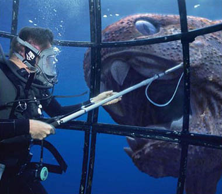

Half uur (prehistorische) natuur
zondag 4 april 2004 | Natuur
Terwijl intussen de eerste beelden van de nieuwe Ronde van Vlaanderen binnenlopen, geniet ik na van een uitzending op TV1 uit de driedelige BBC reeks “Sea Monsters”, waarin de makers op zoek gaan naar de zes gevaarlijkste zeeën uit de prehistorie.
Ik was nooit echt overtuigd door de oudere reeksen van “Walking with Dinosaurs”. De computeranimaties bewogen te houterig en zagen er eerder uit als overmaats speelgoed dan dieren van vlees en bloed. Sea Monsters daarentegen is verbazingwekkend levensecht! De technologie staat niet stil…
De opzet van de serie is ook heel origineel. Zoöloog-presentator Nigel Marven neemt in elk van de zeeën een duik, gewapend met maliënkolders en elektrische shotguns om zich te beschermen tegen al dat prehistorische geweld. De interactie met de dieren is ongelofelijk goed uitgewerkt. Een aanrader voor volgend weekend, als je dan toch zit te wachten op de koers.
PS: Wist je dat de aarde 400 miljoen jaar geleden sneller om haar as draaide waardoor een dag slechts 21 uur duurde. Bizar zeg!

Veerle Pieters op 4 april 2004
Goede tip, ik wist niet dat ze dit uitzonden. Dergelijke documentaires boeien me enorm. Volgende week kijk ik zeker, ofwel neem ik het op. Bedankt! ;-)